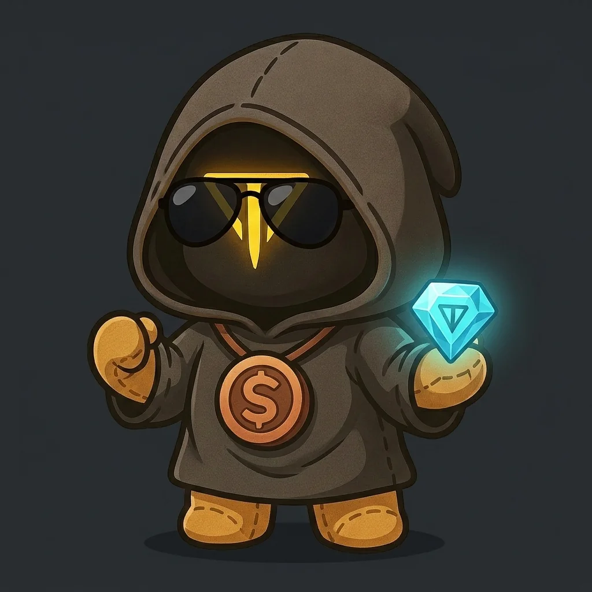
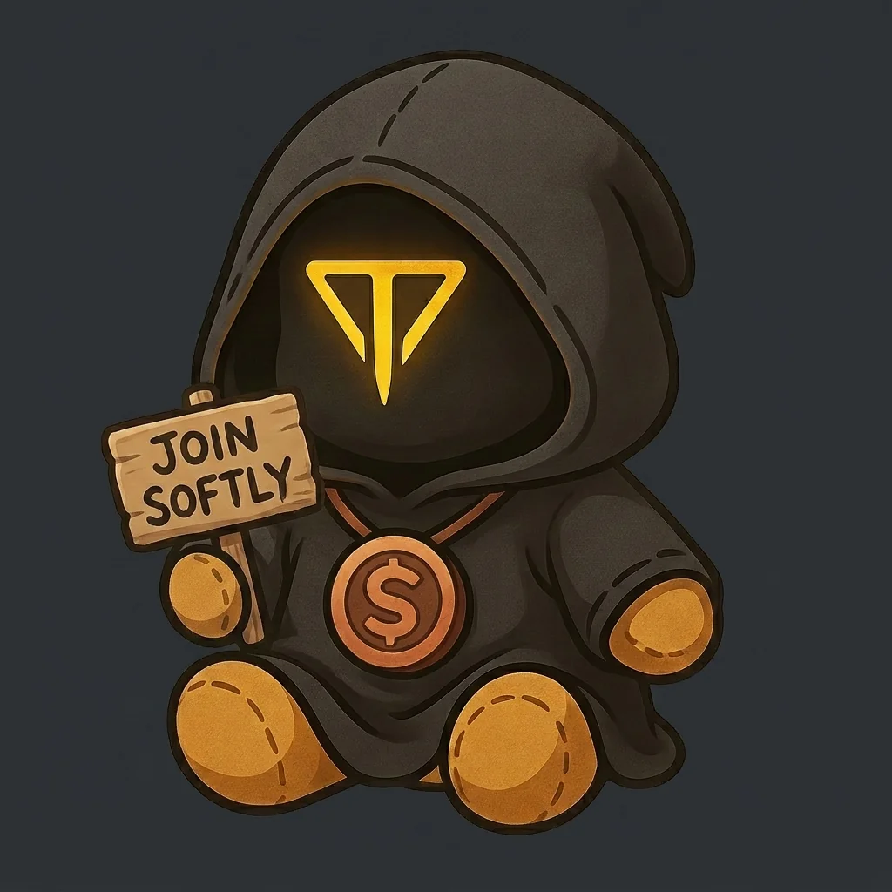
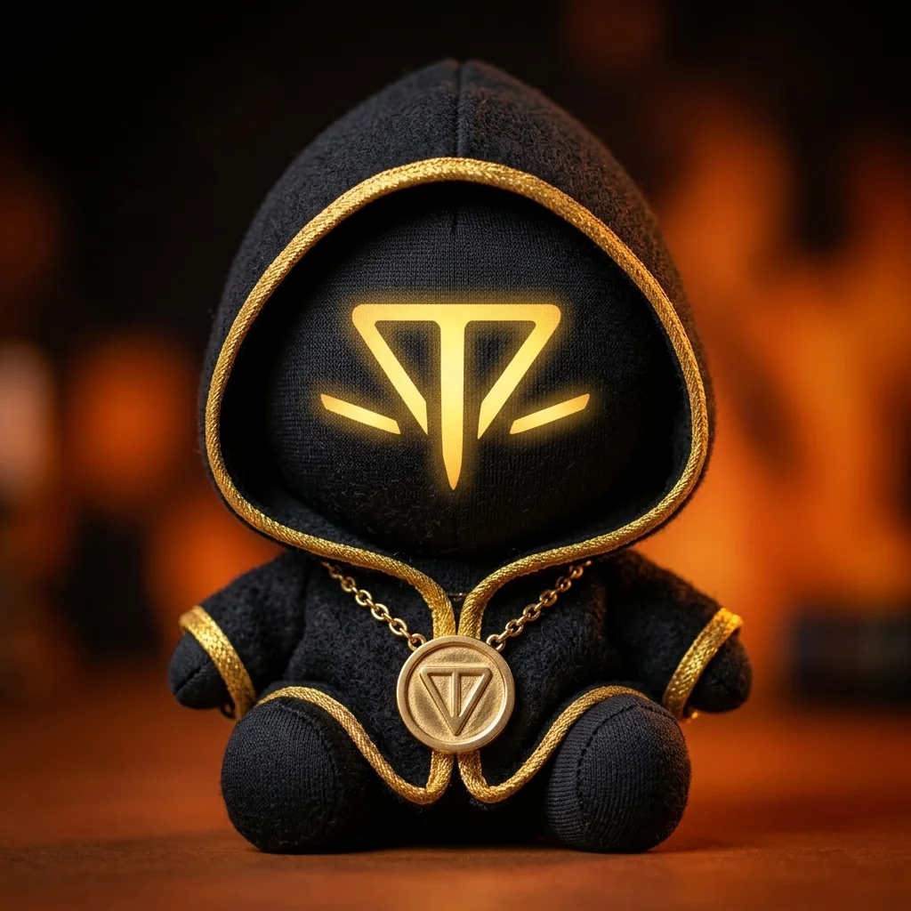
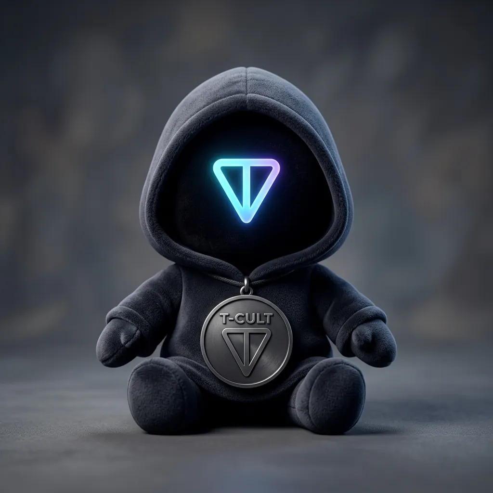
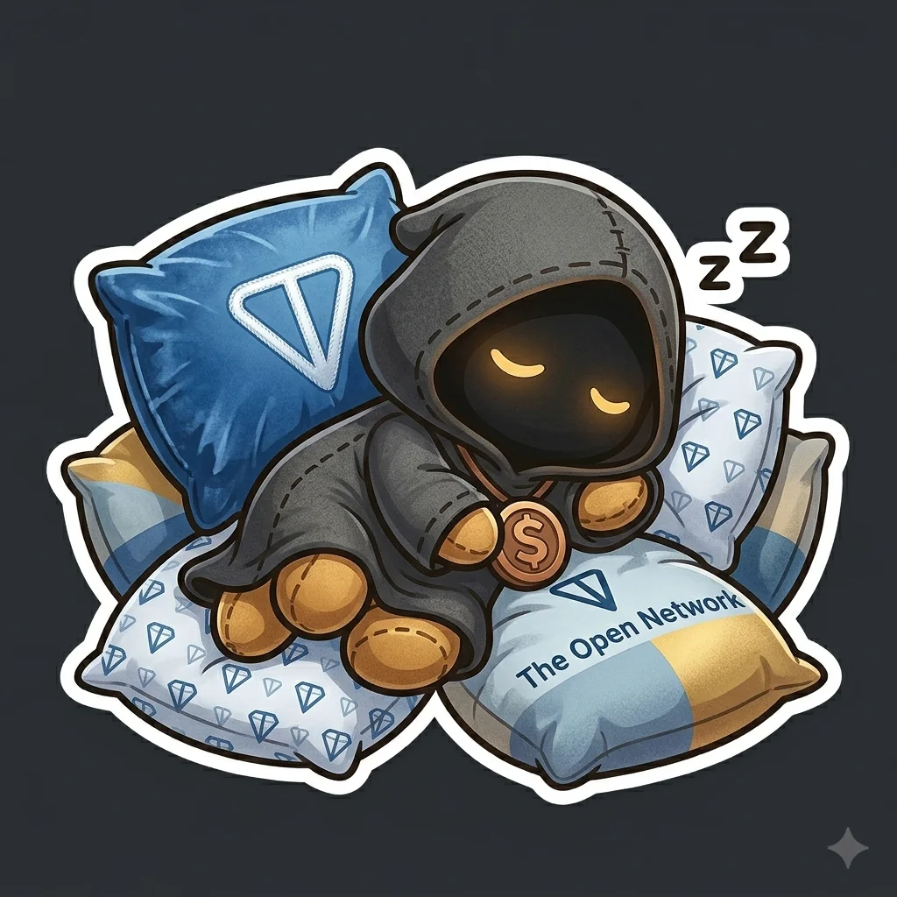

Live mini app
Plush Tap
The daily tap ritual.
A fast first-touch game for quick engagement, score chasing, and easy community participation.
$TCULT is Telegram-native plush culture built on TON rails. Games, collectibles, architecture, and live utility applications bring the community in through Telegram while the network underneath remains TON. The native coin is $GRAM.
The arcade is the daily participation layer. Each game is light, fast, Telegram-native, and built to make the plush world feel active every time the community opens the portal.
A fast first-touch game for quick engagement, score chasing, and easy community participation.
A motion-driven arcade loop designed for quick sessions, clean replays, and shareable runs.
A simple jump-and-survive game that keeps the arcade playful while the broader build expands.
$TCULT Guard is the first public utility app in the ecosystem: a read-only TON blockchain evidence checker that helps users inspect addresses, collections, mini apps, DEX pool links, marketplace links, and explorer URLs before they interact.
A read-only TON blockchain evidence checker that helps the community inspect links before they interact.
A stronger home for games, mini apps, score loops, and community entry points.
A clean way to organize official gift, sticker, PFP, and collectible surfaces as the artifact layer expands.
A navigation layer for official $TCULT destinations, community doors, and TON blockchain product routes.
A planned official-resource record layer that strengthens how future tools recognize trusted $TCULT surfaces.
AI-powered assistants, explainers, and utility workflows designed to make TON blockchain participation easier to understand.
The $TCULT world is carried by workers, operators, signal keepers, and four mythic council seats. The story is not decoration. It is how the community understands the build: play becomes ritual, ritual becomes identity, identity becomes momentum, and momentum becomes useful TON blockchain technology.
The new portal keeps the original artifact lanes intact: Telegram sticker packs, animated packs, founder PFPs, and gift concepts remain directly reachable from the redesigned site.

Soft, early, and built for everyday chat rituals.

Motion-first expressions for Telegram raids, replies, and community moments.

Collectible identity pieces for the earliest believers in the TON blockchain world.

A separate collectible lane for gift-style plush concepts and future identity experiments.

Plush gift art for Telegram sharing and future culture loops.
The public architecture view shows how community, lore, mini apps, utility apps, artifacts, AI-powered production, TON blockchain rails, and engineering documentation connect into one operating system.
The thesis and white-paper page goes deeper into the strategy: Telegram-native distribution, AI-powered production, TON blockchain primitives, living architecture, $TCULT Guard, and utility applications that can become genuinely useful for TON blockchain users.
$TCULT can reveal momentum without giving away private utility concepts before they are close to launch. The public direction is steady: live utility through $TCULT Guard, more Telegram-native games, richer lore, stronger artifacts, and useful TON blockchain applications as each lane becomes ready. $GRAM-aware native coin labels belong where balances, fees, or network costs appear.
Keep live games reachable, improve the community loop, and turn each playable surface into a clearer part of the $TCULT world.
Give the Grand Council and core cast enough story power that people can follow the characters as much as the chart.
Build from the live Guard foundation into practical TON blockchain-native tools that are revealed when each experience is strong enough to stand publicly.
Refresh architecture, content, games, and product ideas on a steady cycle so the community keeps seeing life and motion.